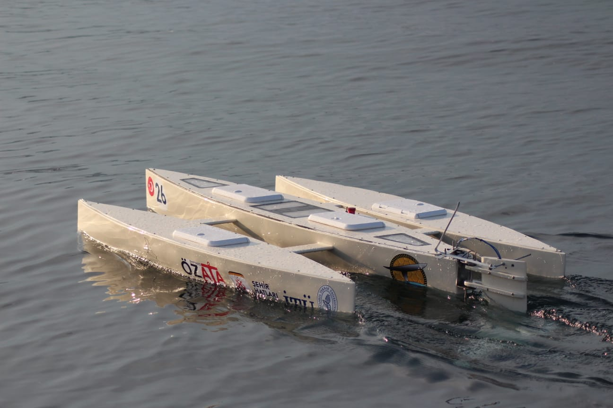
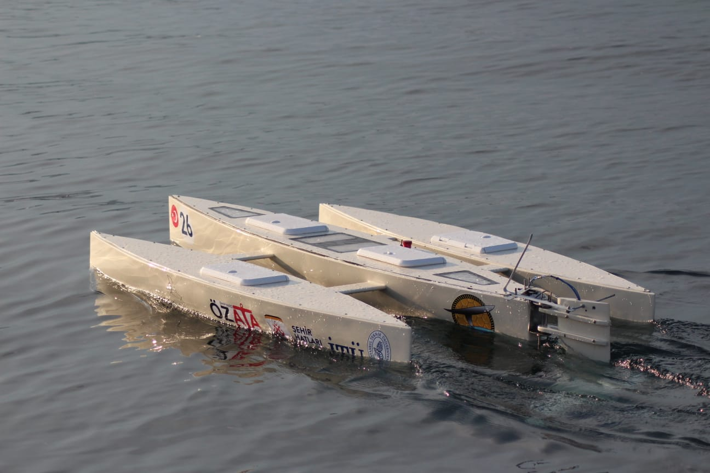

I worked as an electronics responsible for ITU Hydros team.
Our project was carried out with the aim of enabling a boat
designed as an unmanned boat to navigate efficiently as a
result of cutting its contact with water by means of hydrofoils.
We had the opportunity to compete our project in the Switzerland-based
2018 HydroContest competition, which was held for the fifth time in
Saint Tropez, France.
 
